To learn how Indus Civilisation is related to other contemporary civilisations
To understand the urban nature of the Indus Civilisation
To know the lifestyle of the people of this civilisation
To identify and study the major sites of Indus Civilisation
To mark their geographical location in maps
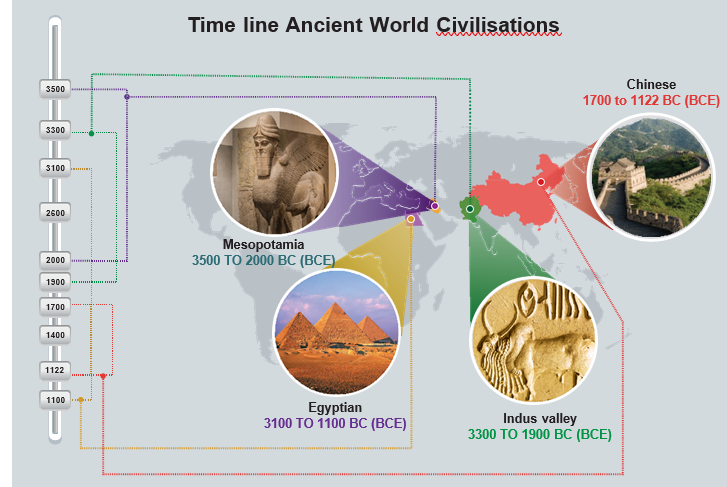
All these civilisations were established only in places near the rivers, most commonly along their banks.
Time line
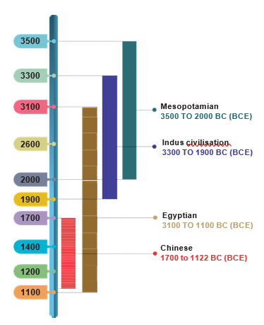
Initially, people lived in groups. Then they formed communities out of these groups. Then evolved the societies which in due course become civilisations.
Why did people settle near rivers?
People preferred to settle near the rivers for the reasons given below.
The soil is fertile.
Fresh water is available for drinking, watering livestock and irrigation.
Easy movement of people and goods is possible.
Discovery of a lost city – Harappa
The ruins of Harappa were first described by the British East India Company soldier and explorer Charles Masson in his book. When he visited the North-West Frontier Province which is now in Pakistan, he came across some mysterious brick mounds. He wrote that he saw a “ruined brick castle with very high walls and towers built on a hill”. This was the earliest historical record of the existence of Harappa.
In 1856 when engineers laid a railway line connecting Lahore to Karachi, they discovered more burnt bricks. Without understanding their significance, they used the bricks for laying the rail road.
In the 1920s archaeologists began to excavate the cities of Harappa and Mohenjo- Daro. They unearthed the remains of these long-forgotten cities. In 1924 the Director General of A S I, Sir John Marshall, found many common features between Harappa and Mohenjo-Daro. He concluded that they were part of a large civilisation.
Some slight differences are found in the earthenwares of Harappa and Mohenjo-Daro. This made the researchers conclude that Harappa was older than Mohenjo-Daro.
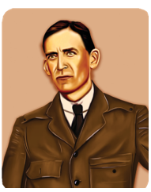
The Archaeological Survey of India (A S I) was started in 1861 with Alexander Cunningham as Surveyor. Its headquarters is located in New Delhi.
How do archaeologists explore a lost city?
Archaeologists study the physical objects such as bricks, stones or bits of broken pottery (sherds) to ascertain the location of the city and time that it belongs to.
They search the ancient literary sources for references about the place.
They look at aerial photographs of the excavation sites or cities to understand the topography.
To see under the ground, they may use a magnetic scanner
The presence and absence of archeological remains can be detected by RADAR and Remote Sensing Methods.
Sites in Indian borders
Archaeologists found major Harappan sites within Indian borders.
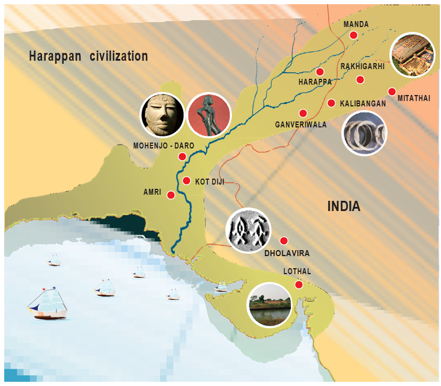
Observe the picture and fill the tabular column.
Name of the place |
Name of the state |
Important finds |
|
|
|
|
|
|
|
|
|
|
|
|
Time Span of Indus Civilisation
Geographical range: South Asia
Period : Bronze Age
Time : 3300 to1900 BC(BCE) (determined using the radiocarbon dating method)
Area : 13 lakhs square kilometre.
Cities : 6 big cities
Villages: More than 200
Urban Civilisation
Harappan civilisation is said to be urban because of the following reasons.
Well-conceived town planning
Astonishing masonry and architecture
Priority for hygiene and public health
Standardized weights and measures
Solid agricultural and artisanal base
Unique Features of Harappan Civilisation
Town planning is a unique feature of the Indus Civilisation. The Harappan city had two planned areas.
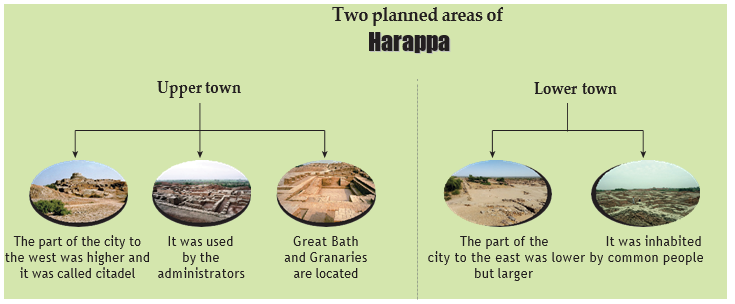
Mehergarh – the Precursor to Indus Civilisation
Mehergarh is a Neolithic site. It is located near the Bolan Basin of Balochistan in Pakistan. It is one of the earliest sites known. It shows evidence of farming and herding done by man in very early times. Archaeological evidence suggests that Neolithic culture existed in Mehergarh as early as 7000 BC (BCE).
Streets and Houses
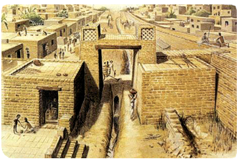
The streets are observed to have a grid pattern. They were straight running from north to south and east to west and intersected each other at right angles.
The roads were wide with rounded corners.
Houses were built on both sides of the street. The houses were either one or two storeys.
Most of the houses had many rooms, a courtyard and a well. Each house had toilets and bathrooms.
The houses were built using baked bricks and mortar. Sun-dried bricks were also used. Most of the bricks were of uniform size. Roofs were flat.
There is no conclusive evidence of the presence of palaces or places of worship.
Do you know
why burnt bricks are used in construction?
They are strong, hard, durable, resistant to fire and will not dissolve in water or rain.
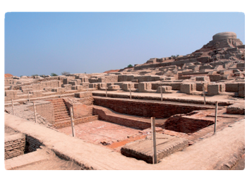
Info Bits
Bronze Age
It is a historical period characterised by the use of articles made of bronze.
Drainage System
Many of these cities had covered drains. The drains were covered with slabs or bricks.
Each drain had a gentle slope so that water could flow.
Holes were provided at regular intervals to clear the drains.
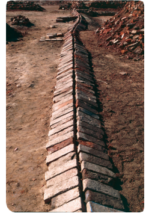
House drains passed below many lanes before finally emptying into the main drains.
Every house had its own soak pit, which collected all the sediments and allowed only the water to flow into the street drain.
The Great Bath (Mohenjo-Daro)
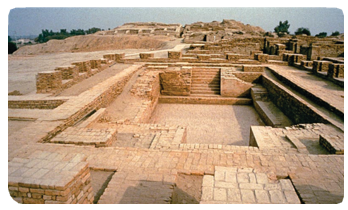
The great bath was a large, rectangular tank in a courtyard. It may be the earliest example of a water-proof structure.
The bath was lined with bricks, coated with plaster and made water-tight using layers of natural bitumen.
There were steps on the north and south leading into the tank. There were rooms on three sides.
Water was drawn from the well located in the courtyard and drained out after use.
The Great Granary (Harappa)
The granary was a massive building with a solid brick foundation.
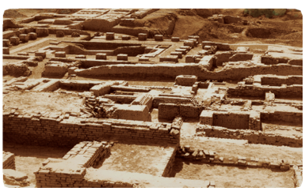
Granaries were used to store food grain.
The remains of wheat, barley, millets, sesame and pulses have been found there.
A granary with walls made of mud bricks, which are still in a good condition, has been discovered in
Rakhigarhi, a village in Haryana, belonging to mature Harappan phase.
The Assembly Hall
The Assembly Hall was another huge public building at Mohenjo-Daro. It was a multi-pillared hall (20 pillars in 4 rows to support the roof).
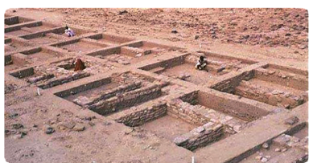
Trade and Transport
Harappans were great traders.
Standardised weights and measures were used by them. They used sticks with marks to measure length.
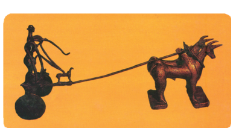
They used carts with spokeless solid wheels.
There is evidence for extensive maritime trade with Mesopotamia. Indus Seals have been found as far as Mesopotamia (Sumer) which are modern-day Iraq, Kuwait and parts of Syria.
King Naram-Sin of Akkadian Empire (Sumerian) bought jewelry from the land of Melukha (a region of the Indus Valley) was mentioned in an epic regarding Naram-Sin.
Cylindrical seals similar to those found in Persian Gulf and Mesopotamia have also been found in the Indus area. This shows the trade links between these two areas.
A naval dockyard has been discovered in Lothal in Gujarat. It shows the maritime activities of the Indus people.
Dockyard at Lothal
Lothal is situated on the banks of a tributary of Sabarmati River in Gujarat.
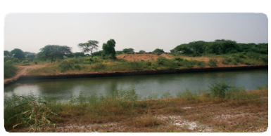
Leader in Mohenjo-Daro
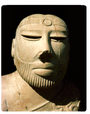
A sculpture of a seated male has been unearthed in a building, with a head band on the forehead and a smaller ornament on the right upper arm.
His hair is carefully combed, and beard finely trimmed.
Two holes beneath the ears suggest that the head ornament might have been attached till the ear.
The left shoulder is covered with a shawl-like garment decorated with designs of flowers and rings.
This shawl pattern is used by people even today in those areas.
Technology
Indus people had developed a system of standardised weights and measures.
Ivory scale found in Lothal in Gujarat is 1704mm (the smallest division ever recorded on a scale of other contemporary civilisations).
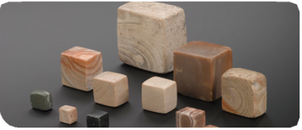
Info Bits
The word ‘civilisation’ comes from the ancient Latin word civics, which means ‘city’.
Do you know
This little statue was found at Mohenjo-Daro. When Sir John Marshall saw the statuette known as the dancing girl, he said, “When I first saw them, I found it difficult to believe that they were pre-historic modeling. Such as this was unknown in the ancient worlds up to the age of Greece. I thought that these figures had found their way into levels some 3000 years old to which they properly belonged”.
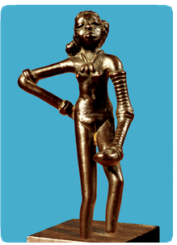
Do you know
KVT Complex (Korkai-Vanji-Thondi) spread over Afghanistan and Pakistan has many places, names of those were mentioned in sangam literature.
Korkai, Vanji, Tondi, Matrai, Urai and Kudalgarh are the names of places in Pakistan.
Gurkay and Pumpuhar in Afghanistan are related to the cities and ports mentioned in the Sangam Age. The names of the rivers Kawri and Poruns in Afghanistan and the rivers kaweri wala and phornai in Pakistan also occur in sangam literature.
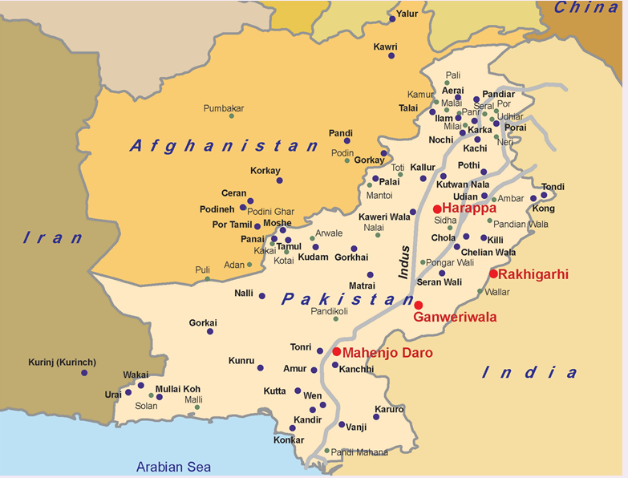
Do you know
The hidden treasures of the Indus civilisation Inscriptions (written in a script of those times) can provide us information about customs, practices and other aspects of any place or time. So far, the Indus script has not been deciphered. Therefore, we must look for other clues to know about the Indus people and their lifestyle.
Apparel
Cotton fabrics were in common use.
Clay spindles unearthed suggest that yarn was spun.
Wool was also used.
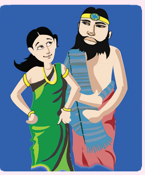
Love and peace
Settlements were built on giant platforms and elevated grounds.
The Indus Civilisation seems to have been a peaceful one. Few weapons were found and there is no evidence of an army.
They displayed their status with garments and precious jewellery.
They had an advanced civic sense.
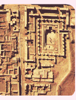
Ornaments
Ornaments were popular among men and women.
They adorned themselves with necklaces, armlets, bangles, finger rings, ear studs and anklets.
The ornaments were made of gold, silver, ivory, shell, copper, terracotta and precious stones.
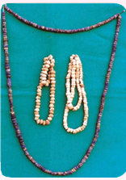
Horse and iron were unknown to the people of Indus.
Do you Know
Indus people used the red quartz stone called Carnelian to design jewellery.
Info Bits
Copper was the first metal discovered and used by humans.
Who Governed them?
Historians believe that there existed a central authority that controlled planning of towns and overseas trade, maintenance of drainage and peace in the city.
Occupation
The main occupation of the Indus Civilisation people is not known. However, agriculture, handicrafts, pottery making, jewellery making, weaving, carpentry and trading were practiced.
There were merchants, traders and artisans.
Rearing of cattle was another occupation.
People of those times knew how to use the potter’s wheel.
They reared domesticated animals.
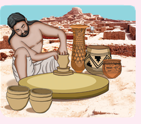
Pottery
Pottery was practiced using the potter’s wheel. It was well fired. Potteries were red in colour with beautiful designs in black.
The broken pieces of pottery have animal figures and geometric designs on it.
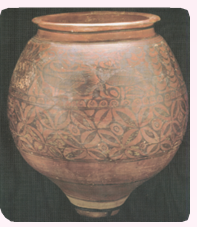
Religious Belief
We don’t have any evidence pointing to specific deities or their religious practices. There might have been worship of Mother Goddess (which symbolized fertility), which is concluded based upon the excavation of several female figurines.
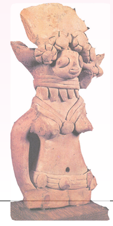
Toy Culture
Toys like carts, cows with movable heads and limbs, clay balls, tiny doll, a small clay monkey, terracotta squirrels eating a nut, clay dogs and male dancer have been found.
They made various types of toys using terracotta, which show that they enjoyed playing.
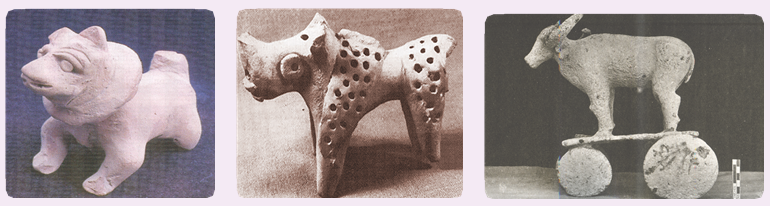
Info Bits
The earliest form of writing was developed by Sumerians.
What happened to Harappans?
By 1900 BCE, the Harappan culture had started declining. It is assumed that the civilisation met with
repeated floods
ecological changes
invasions
natural calamity
climatic changes
deforestation
an epidemic
Do you know
Archaeological site at Mohenjo-Daro has been declared as a World Heritage Site
by UNESCO.
Do You Know
Radiocarbon Dating Method: A Standard Tool for Archaeologists
Also known as C14 method, the radiocarbon method uses the radioactive isotope of carbon called carbon14 to determine the age of an object.
General Facts about Indus Civilisation
It is among the oldest in the world.
It is also the largest among four ancient civilisations.
The world’s first planned cities are found in this civilisation.
The Indus also had advanced sanitation and drainage system.
There was a high sense of awareness on public health.
When man began to live in a settled life, it marked the dawn of civilisation.
River valleys were responsible for the growth of civilisation.
Harappan culture was mainly urban in nature.
Cities were well planned with covered drainage and straight wide roads, cutting each other at right angles.
The people of that time had great engineering skills.
The Great Bath is one of the earliest public tanks.
The civilisation extended from:
Makran coast of Baluchistan in the west. Ghaggar-Hakra river valley in the east. Afghanistan in the north east. Maharashtra in the south.
1 |
Archaeologist |
- |
one who studies the remains of the past by excavations and exploration |
2 |
Excavate |
- |
to uncover by digging away |
3 |
Urbanisation |
- |
population shift from rural areas to urban areas |
4 |
Pictograph |
- |
a record consisting of pictorial symbols |
5 |
Steatite |
- |
a soft variety of talc stone |
6 |
Spindles |
- |
a device used to spin clothes |
7 |
Bitumen |
- |
water-proof tar |
8 |
Artefact |
- |
an object shaped by human craft of historical interest |
9 |
Dockyard |
- |
an enclosed area of water in a port for loading, unloading and repair of ships |
10 |
Seal |
- |
an embossed emblem, figure or symbol |
Elsewhere in the World
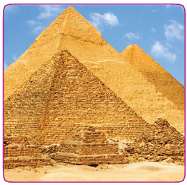
The Great Pyramid of Giza built by king Khufu in 2500 BCE, built with lime stone.
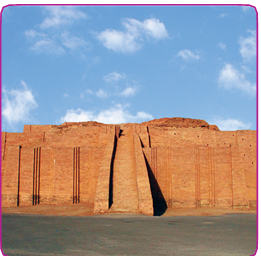
Mesopotamia (Sumerian period) Ur Ziggurat built by king Ur Nammu in Honour of the Moon God Sin.
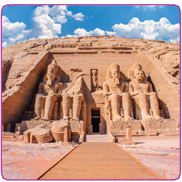
Abu Simbel Site of two temples built by Egyptian king Ramises II.